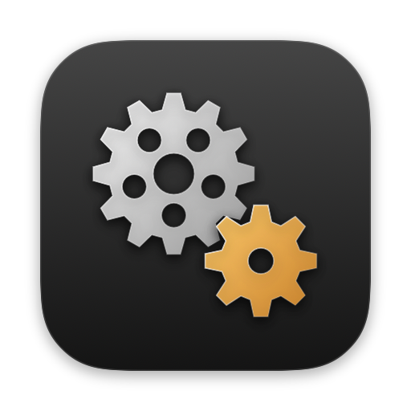

Gearshift
Finder에서 파일을 끌다가 키 하나만 누르면 휠이 펼쳐집니다. 원하는 칸에 놓으면 그 자리에서 변환하고, 줄이고, 정리합니다.
Mac App Store 출시 준비 중세 단계면 끝
원하는 파일을 끌고 키를 누르면 바로 작업할 수 있습니다.
파일을 끈다
Finder에서 파일 하나든 여러 개든 평소처럼 끕니다.
키를 누른다
끄는 중에 ⇧ ⌘ ⌃ 중 하나. 휠이 펼쳐지고 키는 떼도 됩니다.
칸에 놓는다
허용된 폴더에서는 결과가 원본 옆에 저장됩니다. 그렇지 않으면 저장할 폴더를 선택하세요. 원본은 그대로입니다.
키 하나에 휠 하나
누르는 키에 따라 다른 휠이 열립니다. 키는 설정에서 바꿀 수 있습니다.
변환 휠
포맷 바꾸기
- PNG → JPG · HEIC · PDF
- MOV → MP4 · GIF · M4A
- DOCX → PDF · RTF
도구 휠
파일 손보기
- 이미지 압축 · 크기 조절 · 배경 제거
- 영상 압축 · 나누기 · 속도
- PDF 합치기 · 분리 · 압축
작업 휠
어떤 파일에나
- AirDrop · 선반
- 이동 · 복사 · 경로 복사
- 터미널에서 열기
바꿀 수 있는 것
모두 macOS 내장 기능으로 처리합니다. 따로 설치할 것이 없습니다.
| 이미지 | JPG · PNG · HEIC · AVIF · TIFF · BMP · GIF · PDF |
|---|---|
| PNG · JPG · TIFF (페이지별) · DOCX · TXT | |
| 비디오 | MP4 · MOV · M4V · 움직이는 GIF · M4A |
| 오디오 | M4A · WAV · FLAC · AIFF · CAF |
| 문서 | PDF · DOCX · TXT · RTF · HTML · ODT |
| 자막 · 표 | SRT ↔ VTT · CSV ↔ TSV (CP949 한글 파일도) |
| 압축 | ZIP · TAR.GZ 만들기, ZIP · RAR · 7Z · TAR 풀기 |
믿고 맡길 수 있게
이 Mac 안에서만
네트워크를 쓰지 않습니다. 파일을 어디에도 올리지 않고, 사용 기록도 모으지 않습니다.
원본은 그대로
결과는 허용된 폴더의 원본 옆이나 직접 선택한 폴더에 새 이름으로 저장하고 기존 파일을 덮어쓰지 않습니다. 실패하거나 취소해도 반쯤 쓴 파일이 남지 않습니다.
권한 최소
손쉬운 사용이나 전체 디스크 접근 권한이 필요 없습니다. 처음 한 번 결과를 저장할 폴더(보통 홈 폴더)만 허용하면 됩니다.
끌지 않아도
Finder에서 파일을 고르고 오른쪽 클릭 → 서비스 → Gearshift 휠 열기, 또는 메뉴 막대에서 파일을 골라 휠을 열고 키보드로 고릅니다.
자주 묻는 질문
설치는 어떻게 하나요?
Mac App Store에서 받아 실행하세요. 메뉴 막대에 톱니바퀴 아이콘이 생기고, 처음 한 번 사용법 안내가 열립니다. 연습 사진으로 세 휠을 직접 써 볼 수 있고, 마지막 단계에서 홈 폴더를 허용하면 결과가 원본 옆에 저장됩니다.
휠이 안 떠요.
파일을 끄는 도중에 키를 누르고 마우스를 조금 움직여 보세요. ⌃는 끌기 시작한 다음에 눌러야 합니다. 먼저 누르고 클릭하면 오른쪽 클릭이 됩니다.
변환할 때마다 저장할 폴더를 물어봐요.
앱스토어 앱은 허용한 폴더에만 파일을 쓸 수 있습니다. 설정 → 폴더에서 원본이 있는 폴더(또는 홈 폴더)를 추가하세요.
휠에 나오는 포맷을 줄일 수 있나요?
설정 → 휠 포맷에서 파일 종류별로 숨기거나 순서를 바꿀 수 있습니다.
지우려면요?
메뉴 막대 아이콘에서 종료한 뒤 응용 프로그램 폴더의 Gearshift를 휴지통에 넣으면 됩니다. 설정까지 지우려면 ~/Library/Containers/com.jaejunshin.fileconverter 폴더를 삭제하세요.